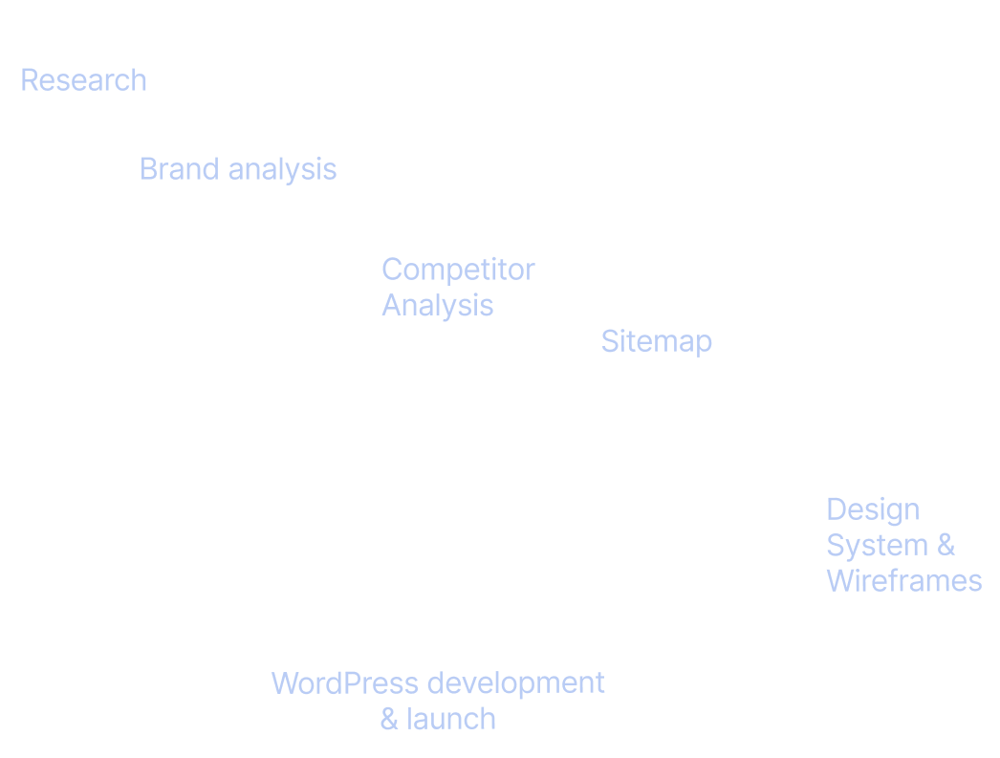
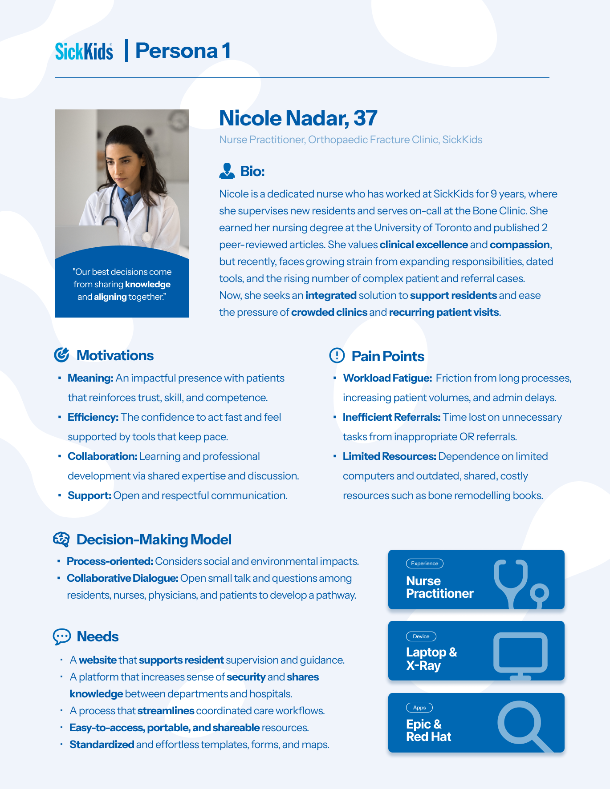
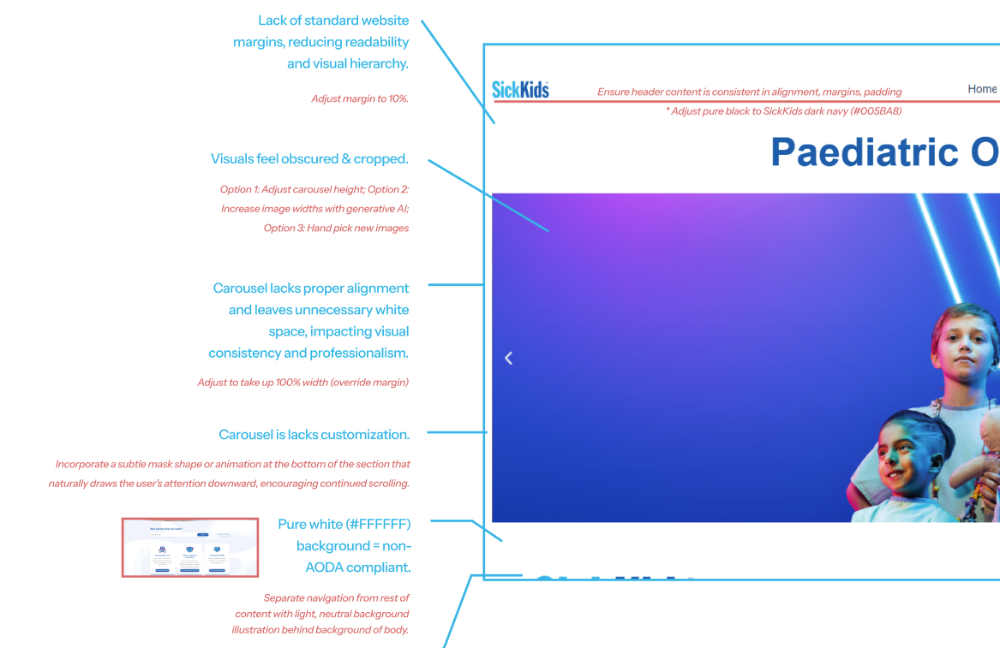
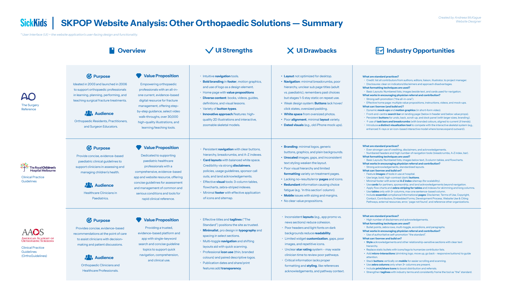
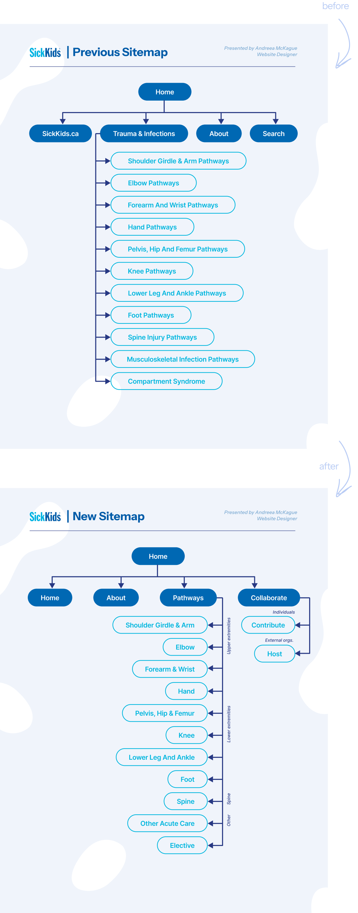
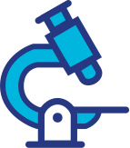
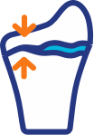
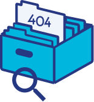
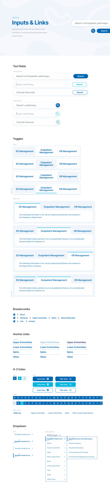
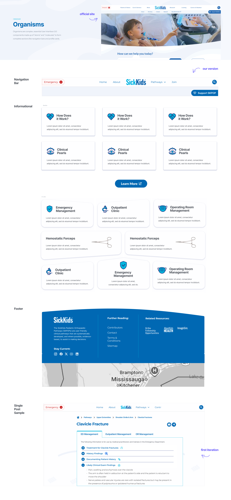

Approach
Applying an AGILE methodology, I created a month-by-month roadmap
with key goals to take on this expansive project. Below is a
high-level overview of my process:

Month 1: Confirm Scope & Goals, Research, Brand
Analysis, Website Audit, Competitor Analysis
Month 2:
Sitemap, Design System, Wireframes
Month 3:
Usability Test, Refine Design System, Refine Wireframes, WordPress
Development
Month 4: WordPress Development,
Hand-Off Document, Website Maintenance Instruction Document
Research Methods
I shadowed and interviewed physicians and
practionners then synthesized findings with secondary research from
the National Institutes of health studies to develop
three evidence-driven personas to guide user flows and
translate into a list of design requirements.
One persona below outlines the need to design not only for impact
but physician stress relief and streamline knowledge sharing:

Brand & Website Analysis
Before my involvement, the SickKids website was handled primarily by
physicians, with only the main pages and content in place. There was
little attention to design, navigation, or user experience.
I captured screenshots of the existing pages and conducted an
analysis to identify opportunities for improvement.

Analysis of Existing Solutions
To inform my design decisions, I reviewed three comparable global
solutions using the same screenshot analysis.
I consolidated these insights into a comparison document to identify
best practices, design opportunities for improvement, and to ensure
the final solution aligned with industry standards.

85%
of physicians report that icons improve readability in
text-heavy documents (OFID).
I identified an opportunity to simplify information and UI
through small, consistent icons—reducing cognitive load.
Sitemap Development
Guided by the user persona, analysis of the existing foundation
site, and benchmarking of industry solutions, I created a new
sitemap that prioritizes first-time users, streamlines navigation,
and concludes with a clear call-to-action for collaboration
opportunities.

Design System



I created a comprehensive Figma design system, building on the
official SickKids website while introducing original concepts. It
covers atoms, molecules, and organisms—from adapting the global
navigation bar to designing custom icons and a tab-driven structure
for organizing content.
The input and link section of the design system:

